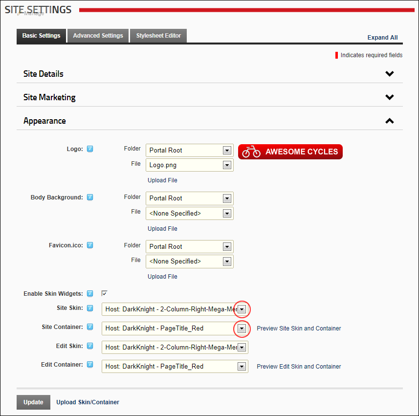

Setting the Default Site Skin and Container
How to set the default skin that is applied to all site pages including the Admin pages and set container that is applied to all existing and new modules on these pages.
Note 1: The page skin can be overridden for individual site pages as can the containers on that page. See "Advanced Settings for Existing Pages"
Note 2: The container can be overridden for an individual module by setting the Module Container field. See "Configuring Advanced Page Settings for a Module"
- Navigate to Admin >
 Site Settings.
Site Settings.
- Optional. Click on the country flag icon associated with the culture (language) to be updated. This field only displays when multiple languages are enabled. See "Viewing a Site in a Secondary Language"
- Select the Basic Settings tab.
- Expand the Appearance section.
- At Site Skin, select the required skin from the drop down list.
- At Site Container, select the required container from the drop down list.
- Optional. Click the Preview Portal Skin and Container link to preview the selected skin and container in a new Web browser.

-
Click the Update button.
Related Topics:
-
See "Uploading a Site Skin and/or Container"